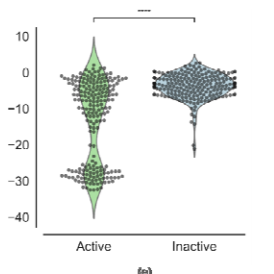
Nature Communications, 2026
AI for drug discovery and cellular profiling
Principal Scientist at Human Chemical Company and Visiting Researcher at Uppsala University.
I am a researcher in chemoinformatics and computational biology, centered on using machine learning and Cell Painting to study small-molecule bioactivity, image-based profiling, and drug discovery.
I am Principal Scientist at Human Chemical Company and Visiting Researcher at Uppsala University. Previously, I was Senior Scientist at Merck US and completed my postdoc at the Broad Institute of MIT and Harvard where I was advised by Anne Carpenter and Shantanu Singh.
I obtained my PhD from the University of Cambridge where I was advised by Andreas Bender. I also serve on the Board of Directors at the American Society for Cellular and Computational Toxicology and the Editorial Board of the Journal of Cheminformatics.
Selected work

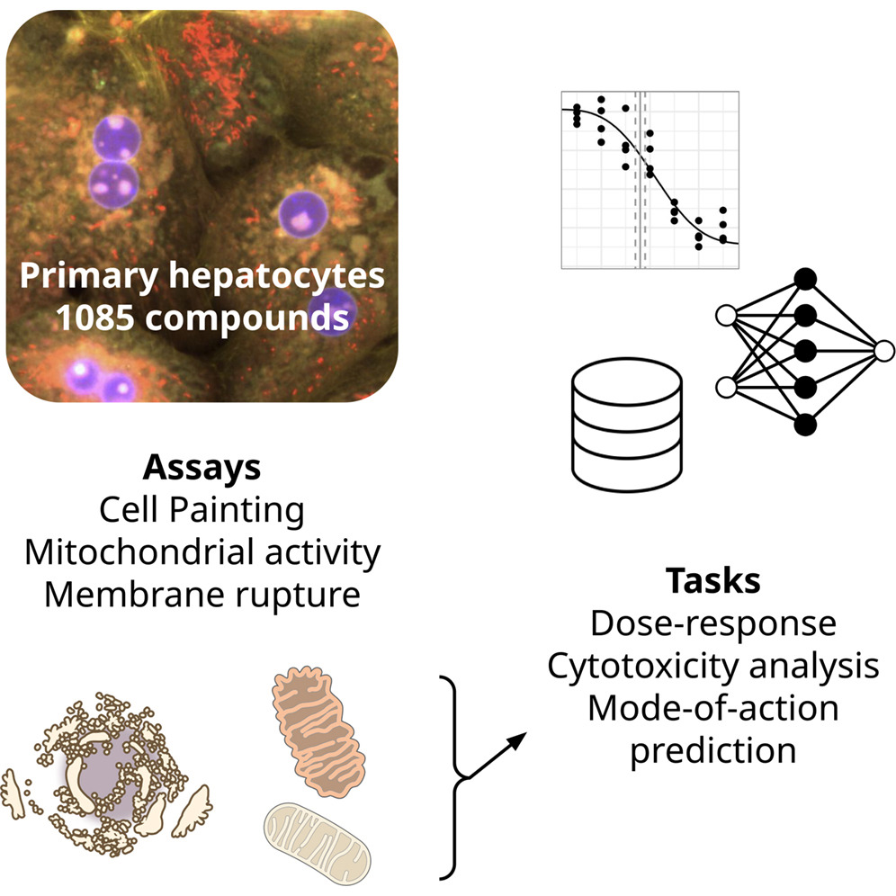
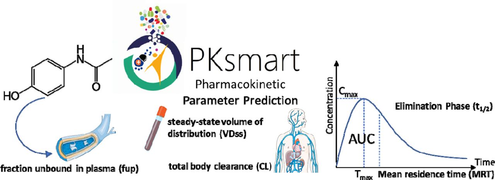
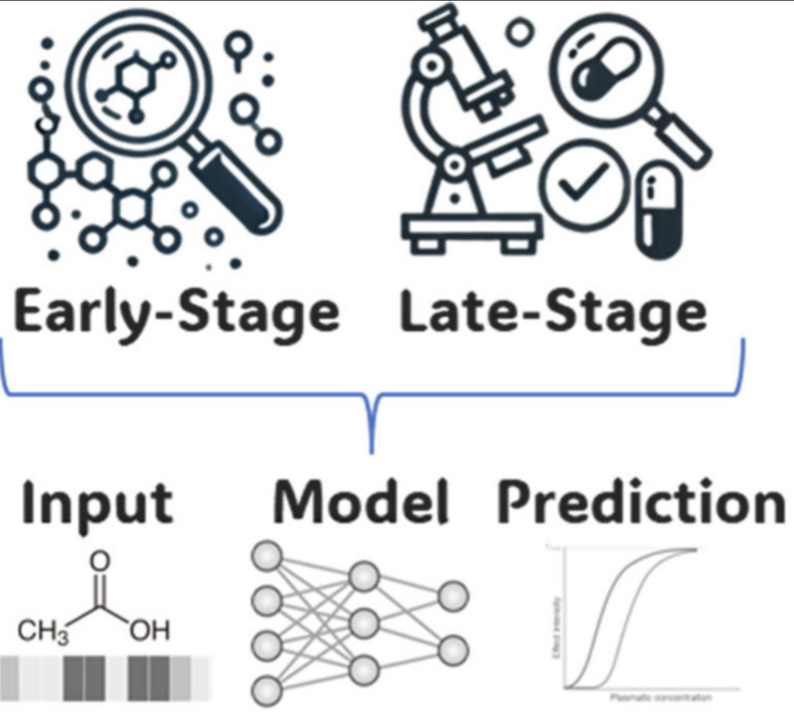
Speaking
No talks match this filter.
Autonomous Discovery: Deploying AI Workflows for Pharmaceutical Development
United StatesAI/ML for Chemical Data Decision-Making
Baltimore, MD, USIntegrating AI into Genetic Toxicology Workflows
Newark, DE, USFrom Data to Detection: AI-Driven Frameworks for Adverse Event Prediction
Tampa, FL, USPitfalls in Prediction: How Not to Use Omics Data for Toxicity Forecasting
San Diego, CA, USThe Five Pillars of Success: Machine Learning for Toxicity Prediction
Online (UK)Machine Learning for Toxicity Prediction Using Chemical Structures: Pillars for Success in the Real World
London, UKJoint Webinar - AI Applications in Toxicology
OnlineGTA Annual Meeting: The Last Mile: Opportunities to Bridge Research and Increase Impact in Human and Environmental Health Science
Newark, DE, USUsing Generative AI to ‘Turn’ Safe but Inactive Molecules into Effective Ligands
Orlando, Florida, USPharmacokinetic Parameters and Cell Morphology Data for Predicting Toxicity
Research Triangle Park, North Carolina , USAn Introduction to Machine Learning and Chemoinformatics
Chicago, USHow NOT to Lie with Machine Learning Models when Predicting Small-molecule Toxicity?
AstraZeneca, Cambridge, UKMachine Learning in Drug Discovery: How Not to Lie with Computational Models?
Cambridge, USFeatured tools
Open-source pharmacokinetic modeling for small-molecule discovery workflows.
Open PKSmartHands-on modeling workflows, predictive ML, and AI-assisted cheminformatics.
Open coursePractical workflow for turning morphology profiles into bioactivity prediction features.
Open tutorialSmall, reusable tools for cheminformatics, Cell Painting, and reproducible research workflows.
Browse toolsPublications
No publications match this filter.
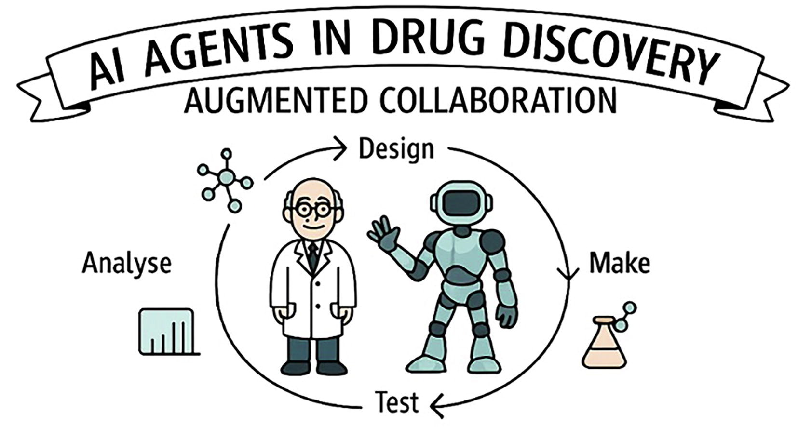
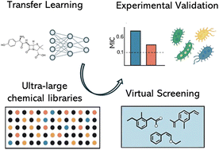
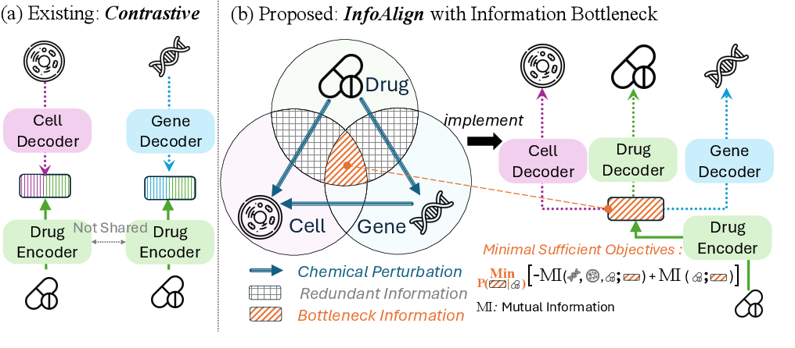
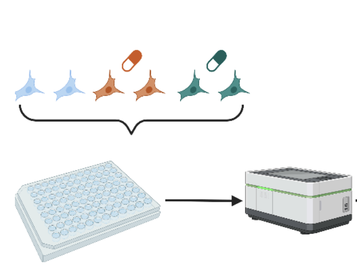
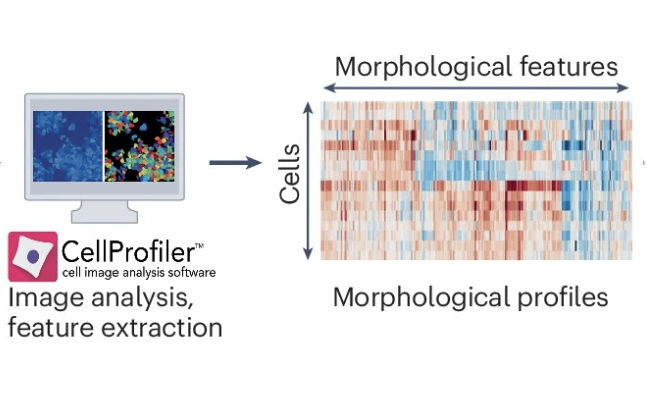
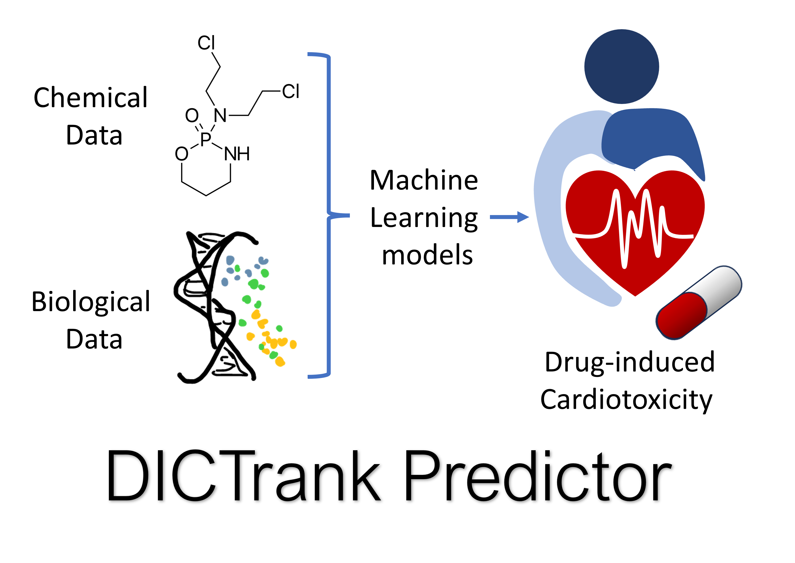
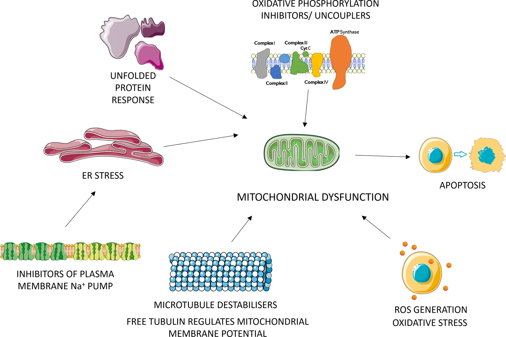
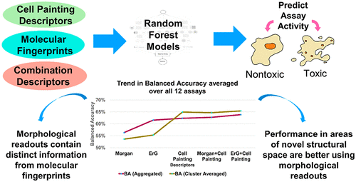
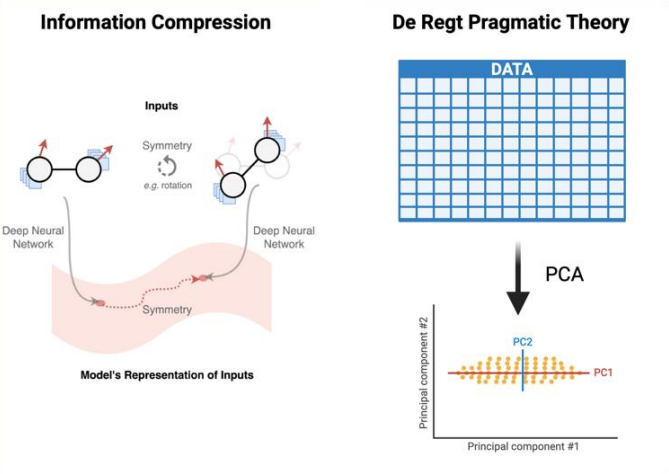
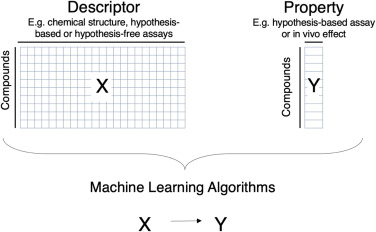
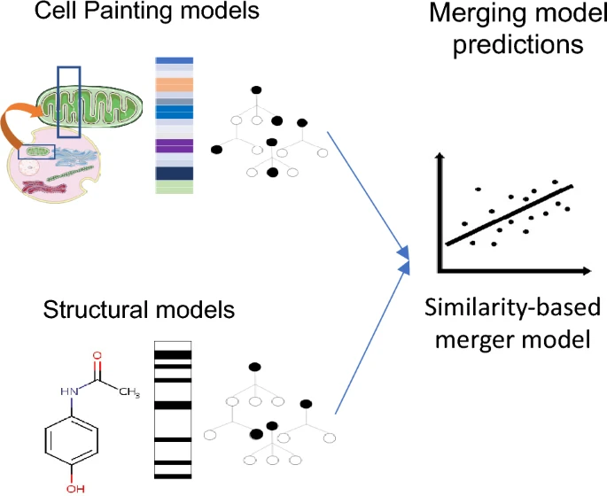
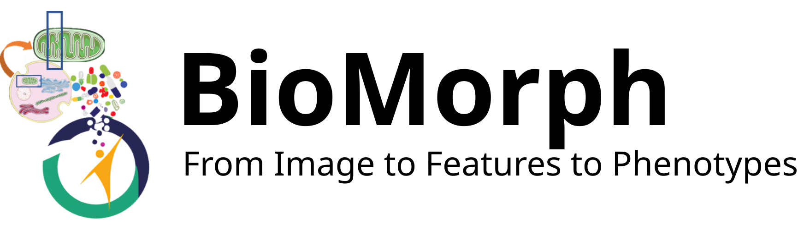
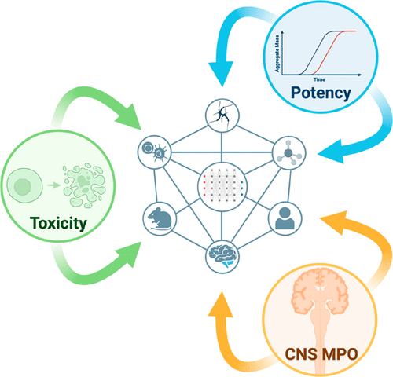
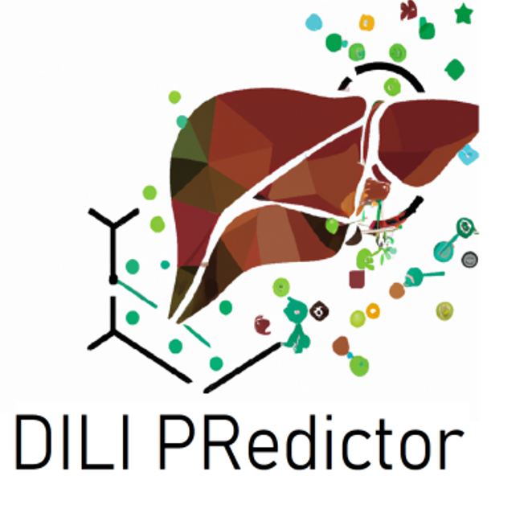
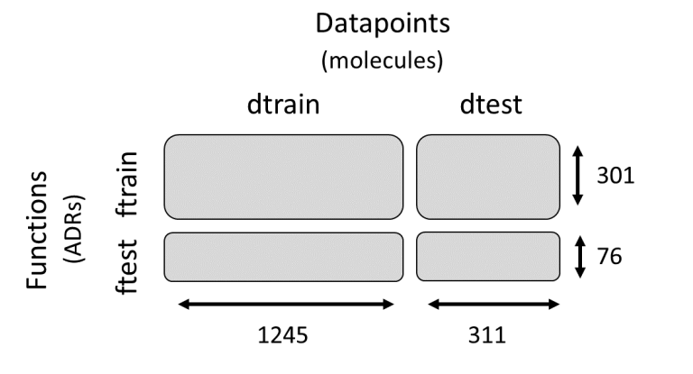
Updates
New papers are out in Drug Discovery Today, Cell Painting in primary human hepatocytes, and progress and challenges in image-based profiling.
Our paper Counting cells can accurately predict small-molecule bioactivity benchmarks is published in Nature Communications.
PKSmart is published in the Journal of Cheminformatics, and our transfer learning study for ESKAPE antibacterials is published in Chemical Science.
pip install infoalign! Add biological information to your chemical fingerprints, using only SMILES as input! Our paper Learning Molecular Representation in a Cell has been accepted to ICLR 2025! We introduce InfoAlign, a new approach for learning molecular representations from cellular response data, integrating features like cell morphology and gene expression. By combining information bottleneck methods with context graphs, we’re able to extract minimal yet sufficient representations of molecules that lead to better predictions and generalization in downstream tasks like molecular property prediction and zero-shot molecule-morphology matching.
Calibrated prediction of scarce adverse drug reaction labels with conditional neural processes has been accepted in DMLR at ICLR 2024. This work introduces a meta-learning approach with neural processes to significantly enhance the accuracy and calibration of adverse drug reaction (ADR) classification.